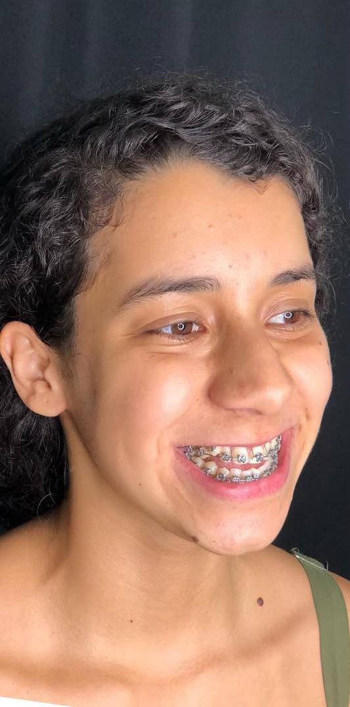
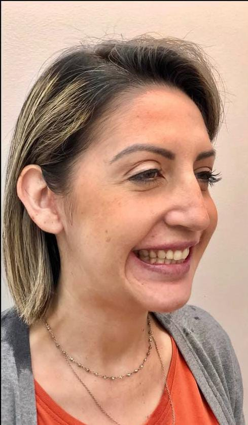
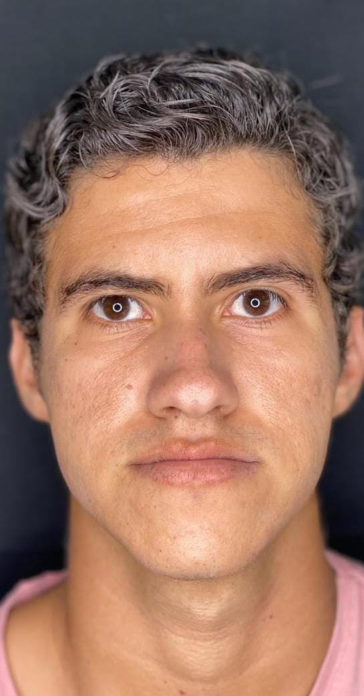

Mais Casos de Antes e Depois
Confira outros resultados e transformações reais.
Caso 02 - Alinhamento mandibular

Caso 03 - Melhora respiratória e facial

Caso 05 - Melhora respiratória e facial


Confira outros resultados e transformações reais.


